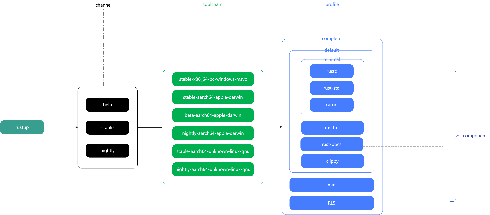

【Rust】Rustup 介绍
学习 rust 的第一步当然是安装，在 rust 中，工具链的安装，升级版本切换都是由 rustup 来完成的。rust 的工具链分布在三个不同的 channel ：stable，beta 和 nightly。
可以将 rustup 看做 rust 的版本管理器，方便我们在不同的 channel 之间进行切换。 在国内 rust 的相关网站是没有被 GFW 屏蔽的，但是访问速度还是很慢。好在国内有很多镜像源，例如，我这里使用的是中国科学技术大学的镜像，配置的话只需要添加两个环境变量：
1 | export RUSTUP_DIST_SERVER="https://rsproxy.cn" |
rustup 的安装我们依然使用官方的方式：
curl --proto '=https' --tlsv1.2 -sSf https://sh.rustup.rs | sh
执行结束之后，应该能看到下面这样的信息，而且会默认安装 nightly（每日构建）版本：

我们可以顺手配置以下 cargo 的镜像地址，参考自 中科大 Rust Crates 镜像使用帮助
1 | [source.crates-io] |
也推荐的字节跳动的 Rustup 镜像和 crates.io 镜像，具体请看 https://rsproxy.cn/。
概念
rustup 就是 rust 的包管理器，安装和管理 rust 的工具链，安装目录是：~/.cargo/bin。安装在 ~/.cargo/bin 中的 rustc 和 cargo 可执行文件其实是真实文件的代理，真正的文件在 ~/.rustup/toolchains/ 目录下，rustup 提供了在各个不同 channel 之间切换的能力。
关于 rustup 有很多术语，channel，toolchain，target，component 和 profile，它们的关系可以用下面的图表示：

channel
rust 有三个不同的 channel 来发布版本：stable，beta 和 nightly。stable 和 beta 每六周发布一次， beta 就是下一个稳定版本，nightly 就是日版本。rustup 用于保持版本最新，并在它们之间轻松切换，当前版本信息请看 Rust Forge，发布模型请看 Appendix G - How Rust is Made and “Nightly Rust”。
我们经常使用 stable 作为我们的开发版本，但是 nightly 提供了提供了很多实验性的功能。切换 nightly 非常方便：
- 安装：
rustup toolchain install nightly - 测试：
rustup run nightly rustc --version - 默认：
rustup default nightly - 更新：
rustup update
Toolchain
rustup 能够安装和处理不同的工具链，官方发布渠道最基本的跟踪：stable、beta 和 nightly；但是 rustup 也可以从官方存档、备用主机平台和本地构建中安装工具链。标准发布通道工具链名称具有以下形式：
1 | <channel>[-<date>][-<host>] |
channel 是发布通道的名称，可以在后年跟上主次版本号，例如 1.42 或者 1.42.0，紧接着在后面可以跟一个发布日期，例如：nightly-2014-12-18。最后的是最主要的，需要填写安装目标机器的相关信息，例如：stable-x86_64-pc-windows-msvc。
rustup toolchain install stable-x86_64-pc-windows-msvc
出去方便考虑，某些编译信息可省略：
rustup toolchain install stable-msvc
对于开发者或者发烧友，可能会自己为 rust 增加新功能编译，那么可以编译自定义工具链，例如，克隆 rust-lang/rust 代码到 ~/rust，然后构建:
rustup toolchain link myrust ~/rust/build/x86_64-unknown-linux-gnu/stage2/
rustup default myrust
rust-lang/rust 项目中没有包含 cargo，从自定义的工具链中调用 cargo 是行不通的，rustup 会依次尝试 nightly，beta 或者 stable 中的 cargo。
component
每个工具链都有一些 component，一些事必要的，例如 rustc，一些是可选的， 例如 clippy。rust componnet 被用于去管理 component。
component 可以随工具链一起安装，使用 --component，例如：
rustup toolchain install nightly --component rust-docs
也可以通过 rust component 命令添加到已安装的工具链中:
rustup component add rust-docs
可用的组件会随着版本变化，下面是一些可用的组件：
rustc— Rust 编译器cargo— 包管理器和构建工具；rustfmt— 代码格式化工具；rust-std— Rust 标准库，Rust 为许多平台都发布了二进制版本的标准库，有些平台还有完整的编译器；rust-docs—Rust 文档的本地副本，可以通过rustup doc在浏览器中打开；rls— 用于IDE提供语言分析的后端能力；clippy— 代码lint工具；miri— 实验性的 Rust 解释器，可用于检查未定义的行为；rust-src— Rust 标准库有代码的本地副本。可以被RLS，Miri或者 Cargo 的实验性build-std功能使用。rust-analysis— 被RLS使用构建标准库的元数据信息；rust-mingw— 包含了用于构建x86_64-pc-windows-gnu平台的linker和库；llvm-tools-preview— 实验性组件，包含了一些列的LLVM工具；rustc-dev— 该组件包含作为库的编译器。大多数用户不需要这个；它仅用于开发链接到编译器的工具，例如对Clippy进行修改。
并非所有的组件在所有的工具链中都可用，关于组件的可用状态可以在 Rust 组件历史 这里找到。
对于 nightly 版本，当我们尝试更新的时候，可能有些组件没有一起发布，如果这个组件是必要的，rustup 会自动寻找一个历史版本，可以通过下面的方式改变这些行为：
- 使用
--flag强制rustup toolchain install安装最新的组件版本，即使没有； - 使用
--profile要求rustup toolchain install用不包含丢失组件的profile。例如，--profile=minimal应该总是可以的工作的； - 安装一个包含需要组件的具体日版本，例如：
rustup toolchain install nightly-2020-07-27。
Profile
profile 就是一组 component，目前可取的值有：minimal，default 和 complete。
-
minimal：包含最少的组件，但是可以让编译器正常公共，例如：rustc，rust-std和cargo。如果不适用本地文档，在windows上推荐使用这个； -
default：除了包含minimal的组件之外，还包含：rust-docs，rustfmt，clippy。rustup的默认行为； -
complete：包含了所有可用的组件，这永远不应该使用，因为它包含了元数据中曾经包含的所有组件。如果你需要某个额外的组件可以进行独立安装，例如rls和miri。
可以使用 rustup set profile 命令更高 rustup 的默认行为，例如 rustup set profile minimal。
Proxy
rustup 包装了通用的 rust 工具， 它们被称为 Proxies 代表的命令由各种各样的 Component 提供。
The list of proxies is currently static in rustup and is as follows:
-
rustcis the compiler for the Rust programming language, provided by the project itself and comes from therustccomponent. -
rustdocis a tool distributed in therustccomponent which helps you to generate documentation for Rust projects. -
cargois the Rust package manager which downloads your Rust package’s dependencies, compiles your packages, makes distributable packages, and uploads them to crates.io (the Rust community’s package registry). It comes from the cargo component. -
rust-lldbandrust-gdbare simple wrappers around thelldbandgdbdebuggers respectively. The wrappers enable some pretty-printing of Rust values and add some convenience features to the debuggers by means of their scripting interfaces. -
rlsis part of the Rust IDE integration tooling. It implements the language-server protocol to permit IDEs and editors such as Visual Studio Code, ViM, or Emacs, access to the semantics of the Rust code you are editing. It comes from therlscomponent. -
cargo-clippyandclippy-driverare related to theclippylinting tool which provides extra checks for common mistakes and stylistic choices and it comes from theclippycomponent. -
cargo-miriis an experimental interpreter for Rust’s mid-level intermediate representation (MIR) and it comes from the miri component.
常用操作
-
如果要更新
rust或者rustup可以使用下面的命令：$ rustup self update
info: checking for self-updates
info: downloading self-updates或者更新
rust：1
2
3
4
5
6
7
8
9
10
11
12
13
14$ rustup update
info: syncing channel updates for 'stable'
info: downloading component 'rustc'
info: downloading component 'rust-std'
info: downloading component 'rust-docs'
info: downloading component 'cargo'
info: installing component 'rustc'
info: installing component 'rust-std'
info: installing component 'rust-docs'
info: installing component 'cargo'
info: checking for self-updates
info: downloading self-updates
stable updated: rustc 1.7.0 (a5d1e7a59 2016-02-29) -
如果我们快速测试不同的
rust版本，可以将rustc或者cargo的第一个参数指定为+beta的形式进行测试，例如:cargo +beta run
-
如果要为目录指定
rust版本，可以在目录下执行rustup override set命令，例如:rustup override set beta
这会在配置文件
~/.rustup/settings.toml，为目录指定rust版本:1
2
3
4
5
6
7
8
9~/WORKDIR/rust/helloworld ⌚ 11:15:14
$ cat ~/.rustup/settings.toml
default_host_triple = "aarch64-apple-darwin"
default_toolchain = "nightly-aarch64-apple-darwin"
profile = "default"
version = "12"
[overrides]
"/Users/fudenglong/WORKDIR/rust/helloworld" = "beta-aarch64-apple-darwin"如果要为项目固定
rust版本，可以在目录中放一个rust-toolchain.toml，里面指定rust版本，例如:1
2
3
4
5[toolchain]
channel = "nightly-2020-07-10"
components = [ "rustfmt", "rustc-dev" ]
targets = [ "wasm32-unknown-unknown", "thumbv2-none-eabi" ]
profile = "minimal"更多请看：https://rust-lang.github.io/rustup/overrides.html#the-toolchain-file
交叉编译
Rust 本身支持大量平台，对于很多平台 Rust 发布了标准库的二进制版本，一些平台还发布了全部的编译构建工具。当我们安装一个工具链的时候，rustup 仅仅会安装本平台下的标准库。为了编译到其他平台，我们必须安装特定平台的标准库，例如，对于 Android：
1 | $ rustup target add arm-linux-androideabi |
然后我们可以使用 cargo build --target=arm-linux-androideabi 构建安卓平台的发布件。但是我们除了安装标准库之外，还需要交叉编译所需的其他工具，尤其是链接器。
环境变量
RUSTUP_HOME：rustup根目录，默认是~/.rustup或者%USERPROFILE%/.rustup；RUSTUP_TOOLCHAIN：默认：none。设置之后，会影响到所有的rust工具调用；RUSTUP_DIST_SERVER：默认：https://static.rust-lang.org，下载rust相关静态资源，可以更改为镜像站点；RUSTUP_UPDATE_ROOT：默认：https://static.rust-lang.org/rustup，rustup自更新的站点，可以更新为镜像站点；RUSTUP_NO_BACKTRACE：即使设置了RUST_BACKTRACE，也禁用非紧急错误的调用栈。
其他不常用的请看 https://rust-lang.github.io/rustup/environment-variables.html。
代理
如果因网络问题不能下载或者下载较慢，可以设置代理，大多情况下设置 https_proxy 就够了。
-
linix:
export https_proxy=socks5://proxy.example.com:1080
-
windows cmd：set https_proxy=socks5://proxy.example.com:1080
-
windows powershell：$env:https_proxy=“socks5://proxy.example.com:1080”
示例
| 命令 | 描述 |
|---|---|
rustup default nightly |
Set the default toolchain to the latest nightly |
rustup set profile minimal |
Set the default profile |
rustup target list |
List all available targets for the active toolchain |
rustup target add arm-linux-androideabi |
Install the Android target |
rustup target remove arm-linux-androideabi |
Remove the Android target |
rustup run nightly rustc foo.rs |
Run the nightly regardless of the active toolchain |
rustc +nightly foo.rs |
Shorthand way to run a nightly compiler |
rustup run nightly bash |
Run a shell configured for the nightly compiler |
rustup default stable-msvc |
On Windows, use the MSVC toolchain instead of GNU |
rustup override set nightly-2015-04-01 |
For the current directory, use a nightly from a specific date |
rustup toolchain link my-toolchain "C:\RustInstallation" |
Install a custom toolchain by symlinking an existing installation |
rustup show |
Show which toolchain will be used in the current directory |
rustup toolchain uninstall nightly |
Uninstall a given toolchain |
rustup toolchain help |
Show the help page for a subcommand (like toolchain) |
rustup man cargo |
(Unix only) View the man page for a given command (like cargo) |
Cargo 插件
cargo-clippy：代码Lint工具；cargo-vet：crate供应链检查；